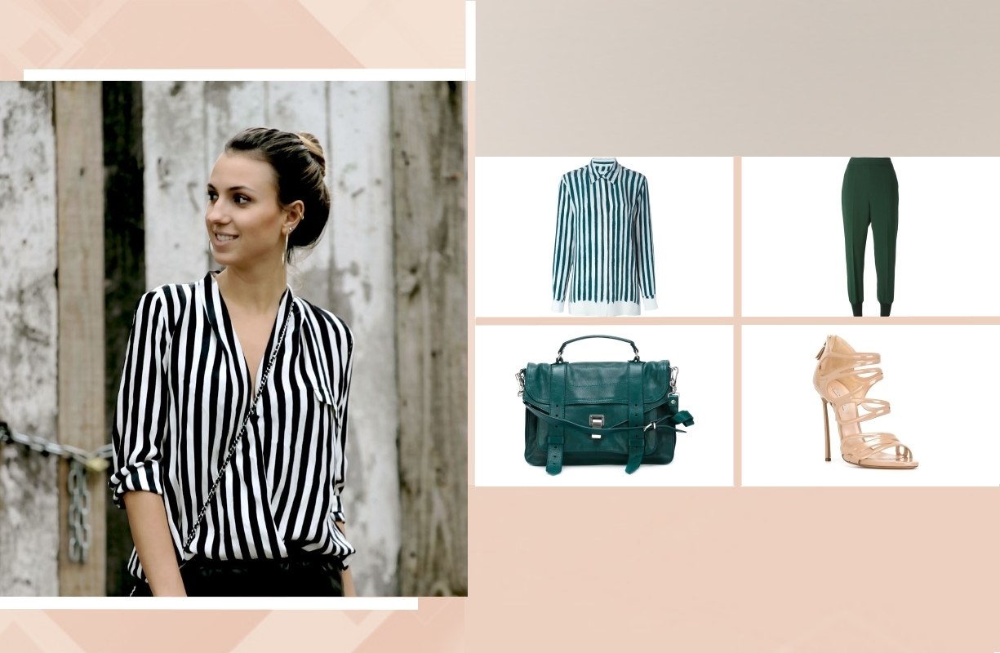
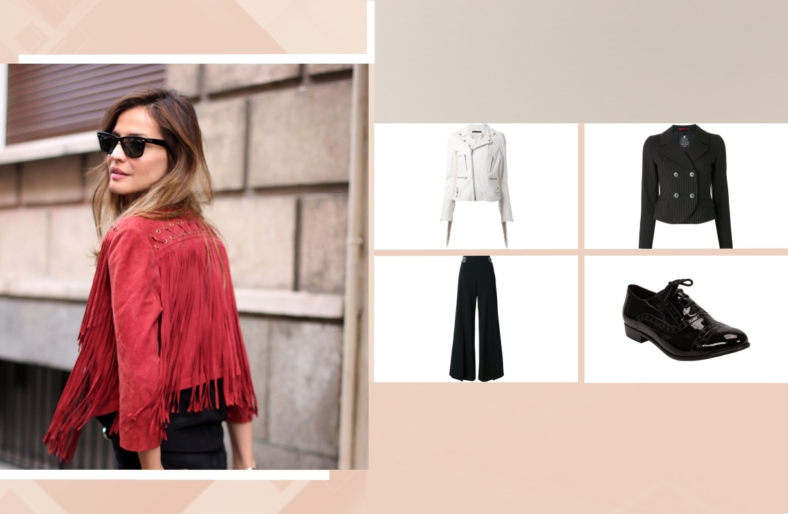
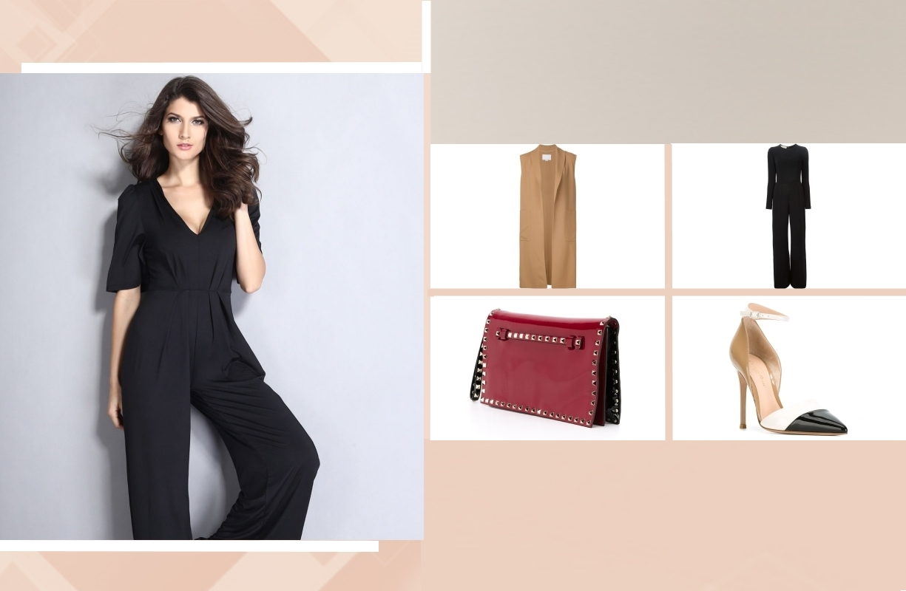
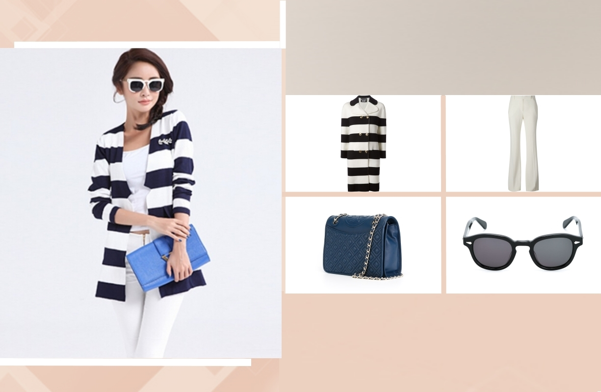

“A moda muda, o estilo permanece” já dizia Coco Chanel. Traduzindo: não é preciso modificar o seu estilo a cada nova tendência e sim adaptá-lo, seja com novas peças, novas proporções ou novas estampas. Para seguir o conselho da toda-poderosa e permanecer atualizada, sugerimos quatro ideias imbatíveis para dar um twist nas peças clássicas do seu closet e quebrar a monotonia das combinações de sempre....
Por Carolina Proiete

Camisa listrada de seda Equipment, Calça cenoura Stella McCartney, Bolsa modelo 'PS1' Proenza Schouler, Sandália de couro Casadei
Camisa de Listras
A camisa de listras está em alta, a nova versão chega com riscas mais largas. Combine com calça cenoura e jaqueta no melhor do look total jeans. Dica rápida: dê sexy appeal à produção usando a dobradinha sandália de tira + batom vermelho.

Jaqueta biker com franjas de couro BLK DNM, Blazer com fechamento duplo Loveless, Calça Stella McCartney, Sapato brogues preto envernizado Septis por Dani Cury
Sobreposição
Sobreposição é a dica de ouro: sempre uma ótima opção para se aquecer nesse inverno que está por vir – olá John Snow! Brinque com texturas e proporções, inspire-se na blogueira Bo Mulder para misturar a jaqueta de franjas setentista com a clássica alfaiataria. Junte o melhor dos dois mundos.

Colete Alexander Wang, Macacão Stella McCartney, Clutch modelo 'Rockstud'Valentino Garavani, Sapato color block Gianvito Rossi
Street Style
Referência para quem gosta de street style, a top blogger internacional Olivia Palermo é sinônimo de elegância sem exageros. Para um visual que vai do trabalho à festa, nos badalados rooftops, deixe o ponto alto para os acessórios. Misture brilhos e estampas com look total P&B.

Casaco listrado Boutique Mosquino, Calça Branca Alexandre McQueen, Bolsa de couro Tory Burch, 'Posh 100' sunglasses Lesca
Elegância Cool
Elegância cool é o seu novo codinome, aposte na dupla casaco + calça. A produção de casaco, com grafismo chic, ganha toque feminino com o clássico scarpin em sua versão salto bloco e com a bolsa a tiracolo. Dica rápida: óculos escuros são a escolha ideal para arrematar a produção.